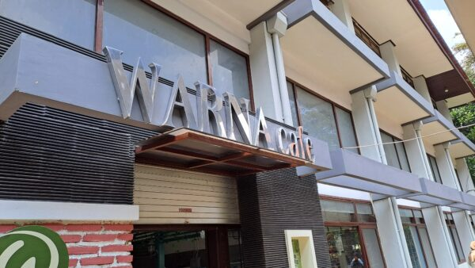

Cafe Warna

Cafe Warna
Cafe Warna menyediakan aneka menu favorit mahasiswa dengan cita rasa yang memanjakan lidah dan harga yang ramah di kantong.
Lihat MenuCafe Warna menyediakan aneka menu favorit mahasiswa dengan cita rasa yang memanjakan lidah dan harga yang ramah di kantong.
Lihat Menu